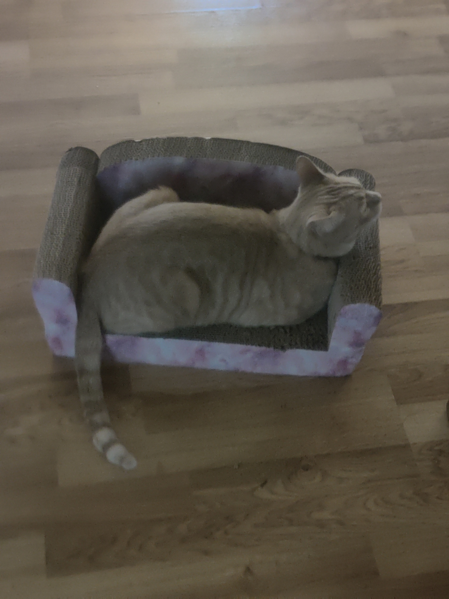
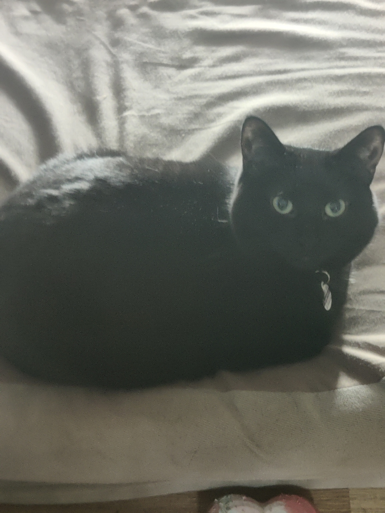
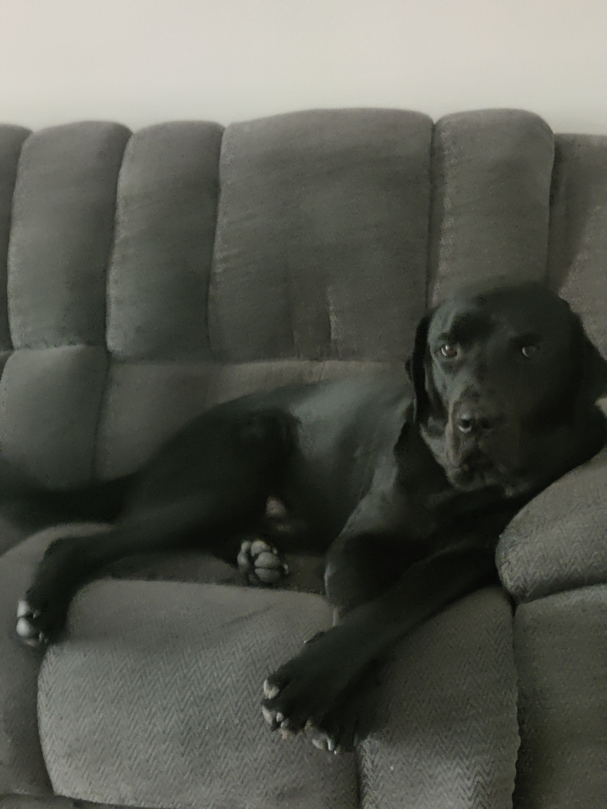

I love cats and dogs and playing video games. Witness the glory of my animals:



I also collect skills like they're pokemon. If I spend too long not learnign anything new, I get bored and start taking colege courses. That how I ended up at Portland State University working on my Master's Degeree. I am only 9 credits or so away from completing my Master's, but that will take longer than you'd expect since I only take one calss a quarter.
My first "big boy job" was working at Sunquest Information Systems. I worked there for 9-1 years depending on how you count, and I worked my way up through their support department to be a instrument specialist. This was critical networking and education for me in the details of how medical instrumentation communicated and operated in general.
Then I got my bachelor's degree and got my first programming job at Sonic Healthcare Inc., where I currently work today as the Senior Instrument Interface Developer for Legacy Lab. My job consists of writing interface in ObjectSCript in order to get orders to instrument from the legacy database, and results back from those instrument into the legacy database. This normally requires parsing standard communication protocols like ASTM or HL7 and extracting the relevant Name/Value pairs for storing as patient results.
It is also never that easy. Vendors routinely feel free to add their own unique interpretations to those standard protocols, or even invent their own custom protocol from whole cloth.